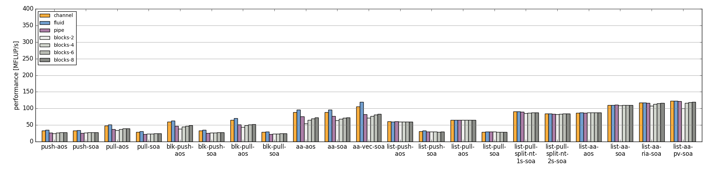
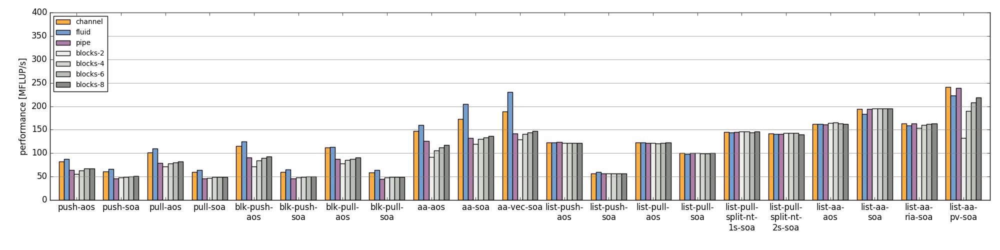
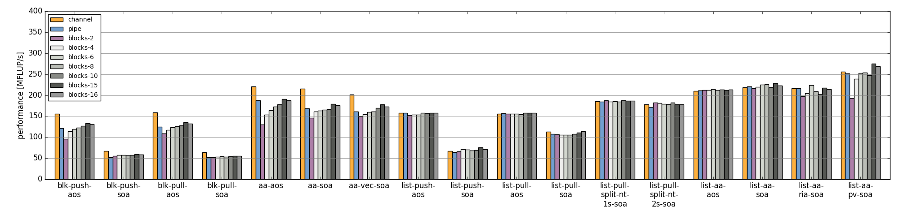
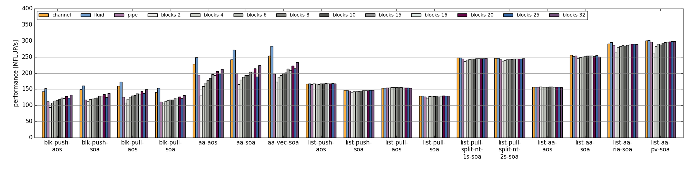
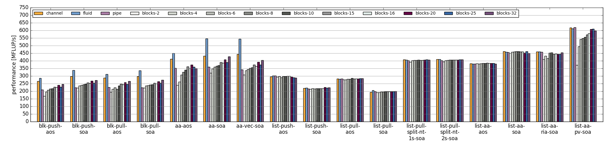
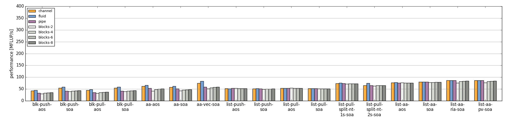
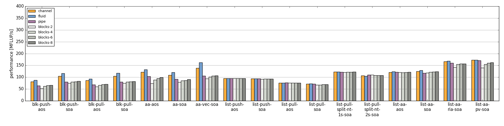
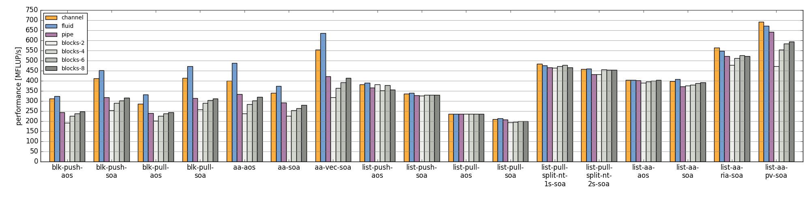

LBM Benchmark Kernels Documentation
Contents
1 Introduction
The lattice Boltzmann (LBM) benchmark kernels are a collection of LBM kernel implementations.
AS SUCH THE LBM BENCHMARK KERNELS ARE NO FULLY EQUIPPED CFD SOLVER AND SOLELY SERVES THE PURPOSE OF STUDYING POSSIBLE PERFORMANCE OPTIMIZATIONS AND/OR EXPERIMENTS.
Currently all kernels utilize a D3Q19 discretization and the two-relaxation-time (TRT) collision operator [ginzburg-2008]. All operations are carried out in double or single precision arithmetic.
2 Compilation
The benchmark framework currently supports only Linux systems and the GCC and Intel compilers. Every other configuration probably requires adjustment inside the code and the makefiles. Furthermore some code might be platform or at least POSIX specific.
The benchmark can be build via make from the src subdirectory. This will generate one binary which hosts all implemented benchmark kernels.
Binaries are located under the bin subdirectory and will have different names depending on compiler and build configuration.
Compilation can target debug or release builds. Combined with both build types verification can be enabled, which increases the runtime and hence is not suited for benchmarking.
2.1 Debug and Verification
make BUILD=debug BENCHMARK=off
Running make with BUILD=debug builds the debug version of the benchmark kernels, where no optimizations are performed, line numbers and debug symbols are included as well as DEBUG will be defined. The resulting binary will be found in the bin subdirectory and named lbmbenchk-linux-<compiler>-debug.
Specifying BENCHMARK=off turns on verification (VERIFICATION=on), statistics (STATISTICS=on), and VTK output (VTK_OUTPUT=on) enabled.
Please note that the generated binary will therefore exhibit a poor performance.
2.2 Release and Verification
Verification with the debug builds can be extremely slow. Hence verification capabilities can be build with release builds:
make BENCHMARK=off
2.3 Benchmarking
To generate a binary for benchmarking run make with
make
As default BENCHMARK=on and BUILD=release is set, where BUILD=release turns optimizations on and BENCHMARK=on disables verfification, statistics, and VTK output.
See Options Summary below for further description of options which can be applied, e.g. TARCH as well as the Benchmarking section.
2.4 Compilers
Currently only the GCC and Intel compiler under Linux are supported. Between both configuration can be chosen via CONFIG=linux-gcc or CONFIG=linux-intel.
2.5 Floating Point Precision
As default double precision data types are used for storing PDFs and floating point constants. Furthermore, this is the default for the intrincis kernels. With the PRECISION=sp variable this can be changed to single precision.
make PRECISION=sp # build for single precision kernels make PRECISION=dp # build for double precision kernels (defalt)
2.6 Cleaning
For each configuration and build (debug/release) a subdirectory under the src/obj directory is created where the dependency and object files are stored. With
make CONFIG=... BUILD=... clean
a specific combination is select and cleaned, whereas with
make clean-all
all object and dependency files are deleted.
2.7 Options Summary
Options that can be specified when building the suite with make:
| name | values | default | description |
|---|---|---|---|
| BENCHMARK | on, off | on | If enabled, disables VERIFICATION, STATISTICS, VTK_OUTPUT. If disabled enables the three former options. |
| BUILD | debug, release | release | debug: no optimization, debug symbols, DEBUG defined. release: optimizations enabled. |
| CONFIG | linux-gcc, linux-intel | linux-intel | Select GCC or Intel compiler. |
| ISA | avx512, avx, sse | avx | Determines which ISA extension is used for macro definitions of the intrinsics. This is not the architecture the compiler generates code for. |
| OPENMP | on, off | on | OpenMP, i.e. threading support. |
| PRECISION | dp, sp | dp | Floating point precision used for data type, arithmetic, and intrincics. |
| STATISTICS | on, off | off | View statistics, like density etc, during simulation. |
| TARCH | -- | -- | Via TARCH the architecture the compiler generates code for can be overridden. The value depends on the chosen compiler. |
| VERIFICATION | on, off | off | Turn verification on/off. |
| VTK_OUTPUT | on, off | off | Enable/Disable VTK file output. |
Suboptions for ``ISA=avx512``
| name | values | default | description |
|---|---|---|---|
| ADJ_LIST_MEM_TYPE | HBM | Determines memory location of adjacency list array, DRAM or HBM. | |
| PDF_MEM_TYPE | HBM | Determines memory location of PDF array, DRAM or HBM. | |
| SOFTWARE_PREFETCH_LOOKAHEAD_L1 | int >= 0 | 0 | Software prefetch lookahead of elements into L1 cache, value is multiplied by vector size (VSIZE). |
| SOFTWARE_PREFETCH_LOOKAHEAD_L2 | int >= 0 | 0 | Software prefetch lookahead of elements into L2 cache, value is multiplied by vector size (VSIZE). |
Please note this options require AVX-512 PF support of the target processor.
3 Invocation
Running the binary will print among the GPL licence header a line like the following:
LBM Benchmark Kernels 0.1, compiled Jul 5 2017 21:59:22, type: verification
if verfication was enabled during compilation or
LBM Benchmark Kernels 0.1, compiled Jul 5 2017 21:59:22, type: benchmark
if verfication was disabled during compilation.
3.1 Command Line Parameters
Running the binary with -h list all available parameters:
Usage:
./lbmbenchk -list
./lbmbenchk
[-dims XxYxZ] [-geometry box|channel|pipe|blocks[-<block size>]] [-iterations <iterations>] [-lattice-dump-ascii]
[-rho-in <density>] [-rho-out <density] [-omega <omega>] [-kernel <kernel>]
[-periodic-x]
[-t <number of threads>]
[-pin core{,core}*]
[-verify]
-- <kernel specific parameters>
-list List available kernels.
-dims XxYxZ Specify geometry dimensions.
-geometry blocks-<block size>
Geometetry with blocks of size <block size> regularily layout out.
If an option is specified multiple times the last one overrides previous ones. This holds also true for -verify which sets geometry dimensions, iterations, etc, which can afterward be override, e.g.:
$ bin/lbmbenchk-linux-intel-release-dp -verfiy -dims 32x32x32
Kernel specific parameters can be obtained via selecting the specific kernel and passing -h as parameter:
$ bin/lbmbenchk-linux-intel-release-dp -kernel kernel-name -- -h ... Kernel parameters: [-blk <n>] [-blk-[xyz] <n>]
A list of all available kernels can be obtained via -list:
$ ../bin/lbmbenchk-linux-gcc-debug-dp -list Lattice Boltzmann Benchmark Kernels (LbmBenchKernels) Copyright (C) 2016, 2017 LSS, RRZE This program comes with ABSOLUTELY NO WARRANTY; for details see LICENSE. This is free software, and you are welcome to redistribute it under certain conditions. LBM Benchmark Kernels 0.1, compiled Jul 5 2017 21:59:22, type: verification Available kernels to benchmark: list-aa-pv-soa list-aa-ria-soa list-aa-soa list-aa-aos list-pull-split-nt-1s-soa list-pull-split-nt-2s-soa list-push-soa list-push-aos list-pull-soa list-pull-aos push-soa push-aos pull-soa pull-aos blk-push-soa blk-push-aos blk-pull-soa blk-pull-aos
3.2 Kernels
The following list shortly describes available kernels:
- push-soa/push-aos/pull-soa/pull-aos: Unoptimized kernels (but stream/collide are already fused) using two grids as source and destination. Implement push/pull semantics as well structure of arrays (soa) or array of structures (aos) layout.
- blk-push-soa/blk-push-aos/blk-pull-soa/blk-pull-aos: The same as the unoptimized kernels without the blk prefix, except that they support spatial blocking, i.e. loop blocking of the three loops used to iterate over the lattice. Here manual work sharing for OpenMP is used.
- aa-aos/aa-soa: Straight forward implementation of AA pattern on full array with blocking support. Manual work sharing for OpenMP is used. Domain is partitioned only along the x dimension.
- aa-vec-soa/aa-vec-sl-soa: Optimized AA kernel with intrinsics on full array. aa-vec-sl-soa uses only one loop for iterating over the lattice instead of three nested ones.
- list-push-soa/list-push-aos/list-pull-soa/list-pull-aos: The same as the unoptimized kernels without the list prefix, but for indirect addressing. Here only a 1D vector of is used to store the fluid nodes, omitting the obstacles. An adjacency list is used to recover the neighborhood associations.
- list-pull-split-nt-1s-soa/list-pull-split-nt-2s-soa: Optimized variant of list-pull-soa. Chunks of the lattice are processed as once. Postcollision values are written back via nontemporal stores in 18 (1s) or 9 (2s) loops.
- list-aa-aos/list-aa-soa: Unoptimized implementation of the AA pattern for the 1D vector with adjacency list. Supported are array of structures (aos) and structure of arrays (soa) data layout is supported.
- list-aa-ria-soa: Implementation of AA pattern with intrinsics for the 1D vector with adjacency list. Furthermore it contains a vectorized even time step and run length coding to reduce the loop balance of the odd time step.
- list-aa-pv-soa: All optimizations of list-aa-ria-soa. Additional with partial vectorization of the odd time step.
Note that all array of structures (aos) kernels might require blocking (depending on the domain size) to reach the performance of their structure of arrays (soa) counter parts.
The following table summarizes the properties of the kernels. Here D means direct addressing, i.e. full array, I means indirect addressing, i.e. 1D vector with adjacency list, x means supported, whereas -- means unsupported. The loop balance B_l is computed for D3Q19 model with double precision floating point for PDFs (8 byte) and 4 byte integers for the index (adjacency list). As list-aa-ria-soa and list-aa-pv-soa support run length coding their effective loop balance depends on the geometry. The effective loop balance is printed during each run.
| kernel name | prop. step | data layout | addr. | parallel | blocking | B_l [B/FLUP] |
|---|---|---|---|---|---|---|
| push-soa | OS | SoA | D | x | -- | 456 |
| push-aos | OS | AoS | D | x | -- | 456 |
| pull-soa | OS | SoA | D | x | -- | 456 |
| pull-aos | OS | AoS | D | x | -- | 456 |
| blk-push-soa | OS | SoA | D | x | x | 456 |
| blk-push-aos | OS | AoS | D | x | x | 456 |
| blk-pull-soa | OS | SoA | D | x | x | 456 |
| blk-pull-aos | OS | AoS | D | x | x | 456 |
| aa-soa | AA | SoA | D | x | x | 304 |
| aa-aos | AA | AoS | D | x | x | 304 |
| aa-vec-soa | AA | SoA | D | x | x | 304 |
| aa-vec-sl-soa | AA | SoA | D | x | x | 304 |
| list-push-soa | OS | SoA | I | x | x | 528 |
| list-push-aos | OS | AoS | I | x | x | 528 |
| list-pull-soa | OS | SoA | I | x | x | 528 |
| list-pull-aos | OS | AoS | I | x | x | 528 |
| list-pull-split-nt-1s | OS | SoA | I | x | x | 376 |
| list-pull-split-nt-2s | OS | SoA | I | x | x | 376 |
| list-aa-soa | AA | SoA | I | x | x | 340 |
| list-aa-aos | AA | AoS | I | x | x | 340 |
| list-aa-ria-soa | AA | SoA | I | x | x | 304-342 |
| list-aa-pv-soa | AA | SoA | I | x | x | 304-342 |
4 Benchmarking
Correct benchmarking is a nontrivial task. Whenever benchmark results should be created make sure the binary was compiled with:
- BENCHMARK=on (default if not overriden) and
- BUILD=release (default if not overriden) and
- the correct ISA for macros (i.e. intrinsics) is used, selected via ISA and
- use TARCH to specify the architecture the compiler generates code for.
4.1 Intel Compiler
For the Intel compiler one can specify depending on the target ISA extension:
- SSE: TARCH=-xSSE4.2
- AVX: TARCH=-xAVX
- AVX2 and FMA: TARCH=-xCORE-AVX2,-fma
- AVX512: TARCH=-xCORE-AVX512
- KNL: TARCH=-xMIC-AVX512
Compiling for an architecture supporting AVX (Sandy Bridge, Ivy Bridge):
make ISA=avx TARCH=-xAVX
Compiling for an architecture supporting AVX2 (Haswell, Broadwell):
make ISA=avx TARCH=-xCORE-AVX2,-fma
WARNING: ISA is here still set to avx as currently we have the FMA intrinsics not implemented. This might change in the future.
Compiling for an architecture supporting AVX-512 (Skylake):
make ISA=avx512 TARCH=-xCORE-AVX512
Please note that for the AVX512 gather kernels software prefetching for the gather instructions is disabled per default. To enable it set SOFTWARE_PREFETCH_LOOKAHEAD_L1 and/or SOFTWARE_PREFETCH_LOOKAHEAD_L2 to a value greater than 0 during compilation. Note that this requires AVX-512 PF support from the target processor.
Compiling for MIC architecture KNL supporting AVX-512 and AVX-512 PF:
make ISA=avx512 TARCH=-xMIC-AVX512
or optionally with software prefetch enabled:
make ISA=avx512 TARCH=-xMIC-AVX512 SOFTWARE_PREFETCH_LOOKAHEAD_L1=<value> SOFTWARE_PREFETCH_LOOKAHEAD_L2=<value>
4.2 Pinning
During benchmarking pinning should be used via the -pin parameter. Running a benchmark with 10 threads and pin them to the first 10 cores works like
$ bin/lbmbenchk-linux-intel-release-dp ... -t 10 -pin $(seq -s , 0 9)
4.3 General Remarks
Things the binary does nor check or control:
- transparent huge pages: when allocating memory small 4 KiB pages might be replaced with larger ones. This is in general a good thing, but if this is really the case, depends on the system settings (check e.g. the status of /sys/kernel/mm/transparent_hugepage/enabled). Currently madvise(MADV_HUGEPAGE) is used for allocations which are aligned to a 4 KiB page, which should be the case for the lattices. This should result in huge pages except THP is disabled on the machine. (NOTE: madvise() is used if HAVE_HUGE_PAGES is defined, which is currently hard coded defined in Memory.c).
- CPU/core frequency: For reproducible results the frequency of all cores should be fixed.
- NUMA placement policy: The benchmark assumes a first touch policy, which means the memory will be placed at the NUMA domain the touching core is associated with. If a different policy is in place or the NUMA domain to be used is already full memory might be allocated in a remote domain. Accesses to remote domains typically have a higher latency and lower bandwidth.
- System load: interference with other application, especially on desktop systems should be avoided.
- Padding: For SoA based kernels the number of (fluid) nodes is automatically adjusted so that no cache or TLB thrashing should occur. The parameters are optimized for current Intel based systems. For more details look into the padding section.
- CPU dispatcher function: the compiler might add different versions of a function for different ISA extensions. Make sure the code you might think is executed is actually the code which is executed.
4.4 Padding
With correct padding cache and TLB thrashing can be avoided. Therefore the number of (fluid) nodes used in the data layout is artificially increased.
Currently automatic padding is active for kernels which support it. It can be controlled via the kernel parameter (i.e. parameter after the --) -pad. Supported values are auto (default), no (to disable padding), or a manual padding.
Automatic padding tries to avoid cache and TLB thrashing and pads for a 32 entry (huge pages) TLB with 8 sets and a 512 set (L2) cache. This reflects the parameters of current Intel based processors.
Manual padding is done via a padding string and has the format mod_1+offset_1(,mod_n+offset_n), which specifies numbers of bytes. SoA data layouts can exhibit TLB thrashing. Therefore we want to distribute the 19 pages with one lattice (36 with two lattices) we are concurrently accessing over as much sets in the TLB as possible. This is controlled by the distance between the accessed pages, which is the number of (fluid) nodes in between them and can be adjusted by adding further (fluid) nodes. We want the distance d (in bytes) between two accessed pages to be e.g. d % (PAGE_SIZE * TLB_SETS) = PAGE_SIZE. This would distribute the pages evenly over the sets. Hereby PAGE_SIZE * TLB_SETS would be our mod_1 and PAGE_SIZE (after the =) our offset_1. Measurements show that with only a quarter of half of a page size as offset higher performance is achieved, which is done by automatic padding. On top of this padding more paddings can be added. They are just added to the padding string and are separated by commas.
A zero modulus in the padding string has a special meaning. Here the corresponding offset is just added to the number of nodes. A padding string like -pad 0+16 would at a static padding of two nodes (one node = 8 b).
5 Geometries
TODO: supported geometries: channel, pipe, blocks, fluid
6 Performance Results
The sections lists performance values measured on several machines for different kernels and geometries and double precision floating point data/arithmetic. The RFM column denotes the expected performance as predicted by the Roofline performance model [williams-2008]. For performance prediction of each kernel a memory bandwidth benchmark is used which mimics the kernels memory access pattern and the kernel's loop balance (see [kernels] for details).
6.1 Machine Specifications
Ivy Bridge, Intel Xeon E5-2660 v2
- Ivy Bridge architecture, AVX
- 10 cores, 2.2 GHz
- SMT enabled
- memoy bandwidth:
- copy-19 32.7 GB/s
- copy-19-nt-sl 35.6 GB/s
- update-19 37.4 GB/s
Haswell, Intel Xeon E5-2695 v3
- Haswell architecture, AVX2, FMA
- 14 cores, 2.3 GHz
- 2 x 7 cores in cluster-on-die (CoD) mode enabled
- SMT enabled
- memory bandwidth:
- copy-19 47.3 GB/s
- copy-19-nt-sl 47.1 GB/s
- update-19 44.0 GB/s
Broadwell, Intel Xeon E5-2630 v4
- Broadwell architecture, AVX2, FMA
- 10 cores, 2.2 GHz
- SMT disabled
- memory bandwidth:
- copy-19 48.0 GB/s
- copy-nt-sl-19 48.2 GB/s
- update-19 51.1 GB/s
Skylake, Intel Xeon Gold 6148
- Skylake server architecture, AVX2, AVX512, 2 FMA units
- 20 cores, 2.4 GHz
- SMT enabled
- memory bandwidth:
- copy-19 89.7 GB/s
- copy-19-nt-sl 92.4 GB/s
- update-19 93.6 GB/s
Zen, AMD EPYC 7451
- Zen architecture, AVX2, FMA
- 24 cores, 2.3 GHz
- SMT enabled
- memory bandwidth:
- copy-19 111.9 GB/s
- copy-19-nt-sl 111.7 GB/s
- update-19 109.2 GB/s
Zen, AMD Ryzen 7 1700X
- Zen architecture, AVX2, FMA
- 8 cores, 3.4 GHz
- SMT enabled
- memory bandwidth:
- copy-19 27.2 GB/s
- copy-19-nt-sl 27.1 GB/s
- update-19 26.1 GB/s
6.2 Single Socket Results
- Geometry dimensions are for all measurements 500x100x100 nodes.
- Note the different scaling on the y axis of the plots!
| Ivy Bridge, Intel Xeon E5-2660 v2, Double Precision |
|  |
| Ivy Bridge, Intel Xeon E5-2660 v2, Single Precision |
|  |
| Haswell, Intel Xeon E5-2695 v3, Double Precision |
 |
| Haswell, Intel Xeon E5-2695 v3, Single Precision |
|  |
| Broadwell, Intel Xeon E5-2630 v4, Double Precision |
 |
| Broadwell, Intel Xeon E5-2630 v4, Single Precision |
 |
| Skylake, Intel Xeon Gold 6148, Double Precision |
|  |
| Skylake, Intel Xeon Gold 6148, Single Precision |
|  |
| Zen, AMD Ryzen 7 1700X, Double Precision |
|  |
| Zen, AMD Ryzen 7 1700X, Single Precision |
|  |
| Zen, AMD EPYC 7451, Double Precision |
 |
| Zen, AMD EPYC 7451, Single Precision |
|  |
7 Licence
The Lattice Boltzmann Benchmark Kernels are licensed under GPLv3.
8 Acknowledgements
This work was funded by BMBF, grant no. 01IH15003A (project SKAMPY).
This work was funded by KONWHIR project OMI4PAPS.
9 Bibliography
| [ginzburg-2008] | I. Ginzburg, F. Verhaeghe, and D. d'Humières. Two-relaxation-time lattice Boltzmann scheme: About parametrization, velocity, pressure and mixed boundary conditions. Commun. Comput. Phys., 3(2):427-478, 2008. |
| [williams-2008] | S. Williams, A. Waterman, and D. Patterson. Roofline: an insightful visual performance model for multicore architectures. Commun. ACM, 52(4):65-76, Apr 2009. doi:10.1145/1498765.1498785 |
Document was generated at 2018-05-22 10:11.